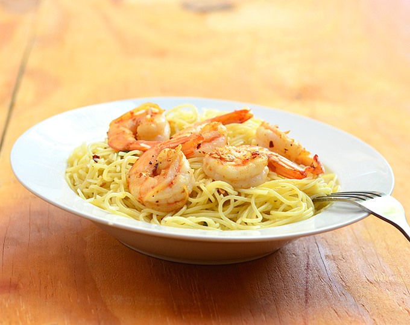

<html lang="en">
<head>
<meta charset="UTF-8">
<meta name="viewport" content="width=device-width, initial-scale=1.0">
<meta http-equiv="X-UA-Compatible" content="ie=edge">
	<meta name="description" content="Garlic Butter Shrimp Pasta">
	<meta name="keywords" content="Garlic,Shrimp,Butter,Recipe">
	<meta name="author" content="Kenold Beauplan">
<title>Garlic Butter Shrimp Pasta Recipe - by Kenold Beauplan</title>
	<link rel="stylesheet" href="https://use.fontawesome.com/releases/v5.3.1/css/all.css">
	<link rel="stylesheet" href="css/style.css">
</head>
<body>
	<script>
		// closing tags
		var aClose = '</a>';
		var pClose = '</p>';
		var divClose = '</div>';
		var sectionClose = '</section>';
		var mainClose = '</main>';

		document.write('<div class="recipe wrapper">');

			document.write('<header class="recipe__overview">');

				var topPhoto = 
					'<figure class="recipe__photo">' +			
						'' +
						'<span class="recipe__photo__icon"></span>' +
					'</figure>';
				document.write(topPhoto);

				document.write('<div class="recipe__summary box">'); 
					document.write('<h6 class="recipe__breadcrumb">Recipe / Seafood Lover</h6>');

					var recipeTitle = 
						'<div class="recipe__header">' + 
							'<h1 class="recipe__heading">Garlic Butter Shrimp Pasta</h1>' + 
						'</div>';
					document.write(recipeTitle);

					// star ratings
					var star = '<i class="recipe__rating__item fas fa-star"></i>';
					var starRatings = 
						'<div class="recipe__rating__list">'+ star + star + star + star + 
							'<i class="recipe__rating__item fas fa-star-half-alt"></i>'+ 
							'<span class="recipe__rating__text">4.5 of 5</span>'+ 
						'</div>';
					document.write(starRatings);


					document.write('<p class="recipe__text">Garlic Butter Shrimp Pasta with shrimps in garlic butter sauce served over al dente pasta. Ready in minutes and with the most amazing flavor, it’s the perfect weeknight dinner!</p>');
				
					var widgetList =
						'<div class="recipe__widget__list">' + 
							'<div class="recipe__widget__item">' + 
								'<div class="recipe__widget__icon"><i class="far fa-clock"></i></div>' + 
								'<div class="recipe__widget__details time">40min</div>' + 
							'</div>' + 
							'<div class="recipe__widget__item">' + 
								'<div class="recipe__widget__icon"><i class="fas fa-utensils"></i></div>' + 
								'<div class="recipe__widget__details servings">8 servings</div>' + 
							'</div>' + 
							'<div class="recipe__widget__item">' + 
								'<div class="recipe__widget__icon"><i class="fab fa-hotjar"></i></div>' + 
								'<div class="recipe__widget__details calories">189 cals</div>' + 
							'</div>' + 
						'</div>';
				document.write(divClose); // close recipe__summary
			document.write('</header>');

			document.write('<main class="recipe__content box">');

				document.write('<section class="recipe__ingredients">');

					document.write('<h2 class="ingredients__heading">Ingredients</h2>');

					var ingredientsList = 
						'<ul class="ingredients__list">' + 
						'<li class="ingredient__item">1 pound angel hair pasta</li>' + 
						'<li class="ingredient__item">1 cup butter</li>' + 
						'<li class="ingredient__item">1 head garlic, peeled and minced</li>' + 
						'<li class="ingredient__item">1 tablespoon fresh basil, chiffonaded</li>' + 
						'<li class="ingredient__item">1/2 teaspoon dried red pepper flakes</li>' + 
						'<li class="ingredient__item">1 pound large shrimps, peeled and deveined, leaving tail intact</li>' + 
						'<li class="ingredient__item">salt and pepper to taste</li>' + 
						'<li class="ingredient__item">1 tablespoon Parmesan cheese, grated</li>' + 
						'</ul>';
					document.write(ingredientsList);
				document.write(sectionClose); // close ingredients section

 				document.write('<section class="recipe__directions">'); 
					document.write('<h2 class="directions__heading">Directions</h2>'); 

					var directionsList = 
						'<ul class="directions__list">' + 
							'<li class="directions__item">' + 
								'<p class="directions__text">' + 
								'In a pot over medium heat, bring about 4 quarts of lightly-salted water to a boil. Add pasta and cook for about 4 to 5 minutes. Remove from pot and drain well.</p>' + 
							'</li>' + 
							'<li class="directions__item">' + 
								'<p class="directions__text">' + 
								'In a wide skillet over medium-low heat, add butter. When butter just begins to melt, add garlic and continue to cook, stirring regularly, for about 2 to 3 minutes or until lightly browned and aromatic.</p>' + 
							'</li>' + 
							'<li class="directions__item">' + 
								'<p class="directions__text">' + 
								'Add basil and chili flakes. Remove garlic butter sauce from pan, leaving about 1 tablespoon, and set aside.</p>' + 
							'</li>' + 
							'<li class="directions__item">' + 
								'<p class="directions__text">Increase heat to high. Add shrimps and cook for about 2 to 3 minutes or until color changes to pink and cooked through. Season with salt and pepper to taste.</p>' + 
							'</li>' + 
							'<li class="directions__item">' + 
								'<p class="directions__text">Add pasta, garlic butter sauce, and parmesan cheese. Gently toss to combine and continue to cook just until heated through.</p>' + 
							'</li>' + 
							'<li class="directions__item">' + 
								'<p class="directions__text">Divide onto serving plates and garnish with Parmesan cheese. Serve hot.</p>' + 
							'</li>' + 
						'</ul>';
					document.write(directionsList);
				document.write(sectionClose); // close directions section
 			document.write(mainClose);
		document.write(divClose); // close recipe wrapper 

		// FOOTER
		document.write('<footer class="main-footer">');

			document.write('<div class="footer__content wrapper">');
				document.write('<div class="footer__copyrights">&copy; 2018. Created by Kenold Beauplan</div>');
				var recipeSource = 
					'<p class="footer__source">' + 
						'The recipe photo and text were taken from <a href="https://www.onionringsandthings.com/garlic-butter-shrimp-pasta/" target="_blank">Onion Rings &amp; Things</a>.' + 
					'</p>';
				document.write(recipeSource);

				var websiteTools =
 					'<p class="footer__tools">' + 
 					'I built this page using HTML and <a href="https://css-tricks.com/snippets/css/a-guide-to-flexbox/" target="_blank">CSS Flexbox</a> for layout. For font size unit, I chose to use <a href="https://engageinteractive.co.uk/blog/em-vs-rem-vs-px" target="_blank">REM</a> instead of pixels. I also used ' + 
 					'<a href="http://getbem.com/introduction/" target="_blank">CSS BEM Naming</a> because it allows me to write clean and maintainable CSS. The icons are from <a href="https://fontawesome.com/" target="_blank">Font Awesome</a>.</p>';
				document.write(websiteTools);
			document.write(divClose); // close footer content

 		document.write('</footer>'); 	
	</script>
</body>
</html>